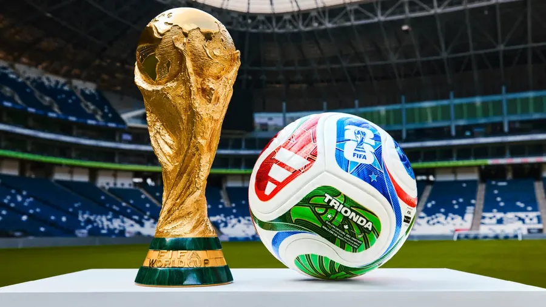

COSTA DO MARFIM ganha a Copa 2026!
Por: Tralalelito
Com muita animação, declaramos Costa do Marfim a mais nova vencedora da World Cup 2026! Após um ataque alienígina durante o jogo contra Portugal, Costa do Marfim - um país relativamente novo na copa - o Artilheiro do time acerta OITO GOLS SEGUIDOS em menos de DEZ MINUTOS. Claro, que se não fosse pela grande ajuda de nosso grande deus: Tralalelo, o país jamais teria chance contra os portugueses, que ficaram perturbados após a grande interferência no jogo. Em suma, com esse post, gostaríamos de declarar COSTA DO MARFIM o mais campeão da copa! Parabéns Costa do Marfim!